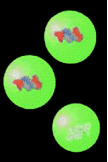
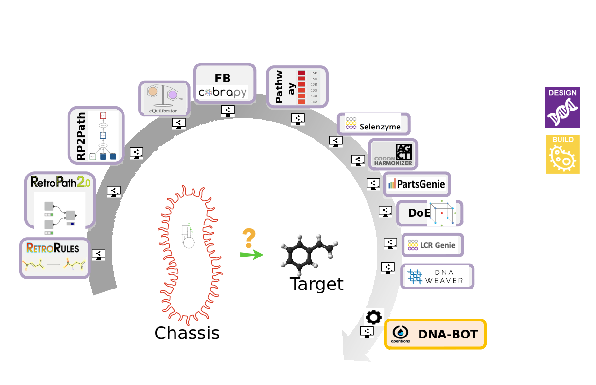

Introduction to Synthetic Biology
Contributors
What is the goal of synthetic biology?
The goal of synthetic biology is to extend or modify the behavior of organisms and engineer them to perform new tasks.
.center[LIFE AS IT SHOULD BE or AS WE WANT IT TO BE]
What is engineering?
.left[The branch of science and technology concerned with the design, building, and use of engines, machines, and structures.]
.left[Engineering is not usually considered a science:] .left[ - Science is about discovering the natural] .left[ - Engineering is creating the artificial]
.left[Engineers apply the principles of science and mathematics to develop solutions to problems.]
.left.image-40[ ]
]
Types of Engineering
- Civil
- Mechanical
- Chemical
- Electrical
- Electronic
- Computer
- Biological
Hierarchy for synthetic biology inspired by computer engineering
.center[]
Synergy between Systems and Synthetic Biology
.left[Systems biology catalogs novel parts, metabolic networks, and regulatory strategies from a variety of organisms that can be exploited by synthetic biology to elicit novel cellular function.]
.left[Synthetic biology provides novel strategies to perturb endogenous networks, enabling systems-level data to be obtained under a myriad of otherwise inaccessible cellular states.]
.center[]
What do biological engineers engineer? … DNA
Bottom-up approach
.center[]
Synthetic biology: Concepts
.left[- Break down the DNA into biological parts (e.g. promoters, terminators, ribosome binding sites, genes) that we can study in a living organism in the particular way that they appear.]
.left[- Define rules and models which tries to predict how a particular stretch of DNA such as promoters, terminators and binding sites, are working for the cell.]
.left[- Use Standard parts so that biologists from different laboratories can work together on the same parts.]
Parts Registry
.left[To design new systems, synthetic biologists will look to natural biological systems to find functional units of DNA or synthesize new ones that do not naturally exist. These functional units are tested and characterized and may become components in a biological device or system. We refer to them as parts.]
.left[By simplifying and standardizing biology, the engineer can go on to use parts to create their biological systems without spending time researching each individual component or worrying about how to assemble them together.]
.left[The goal of the Registry is to aid in this process by creating a library of standard parts that have been tested, characterized, and organized so that users can find what they need when developing new biological systems.]
.left[Parts are centralized in repositories like SynbioHub where DNA and protein designs can be uploaded. It also facilitates searching for information about existing useful parts and designs by combining data from a variety of sources.]
Parts Registry
.left[The Registry divides a plasmid into two separate components:]
.pull-left[ ]
.pull-left[
]
.pull-left[
- the part
- A biological part: a natural nucleic acid sequence that encodes a definable biological function
- A standard biological part: a biological part that has been refined in order to conform to one or more defined technical standards ]
.pull-right[ ]
.pull-left[
]
.pull-left[
- the plasmid backbone
- All plasmids in Parts Registry are in a standard BioBricks format which is a standard for interchangable parts, developed with a view to building biological systems in living cells ]
Synthetic biology approaches
.pull-right[ ]
.pull-left[- New circuits building (bottom-up) : Parts and devices, regulators, to make biology easier to engineer.]
]
.pull-left[- New circuits building (bottom-up) : Parts and devices, regulators, to make biology easier to engineer.]
.pull-right[ ]
.pull-left[- Minimal genomes, synthetic genomes : Simplify genomes, add and control the new functions.]
]
.pull-left[- Minimal genomes, synthetic genomes : Simplify genomes, add and control the new functions.]
.pull-right[ ]
.pull-left[- Metabolic engineering : Cell factories: New metabolic pathways.]
]
.pull-left[- Metabolic engineering : Cell factories: New metabolic pathways.]
.pull-right[ ]
.pull-left[- Xenobiology : Artificial genetic information (ex. XNA).]
]
.pull-left[- Xenobiology : Artificial genetic information (ex. XNA).]
.pull-right[] .pull-left[- Protocells : Synthetic cell-like vesicles, without DNA.]
Synthetic biology : the engineering cycle (DBTL)
The Design-Build-Test-Learn (DBTL) framework aims to fulfill particular design criteria for a synthetic biology application, which might for example be the production of a specific product at an optimal titer or the detection of a specific clinical biomarker using an engineered gut microbiome.
.center[]
Synthetic biology : the engineering cycle (DBTL)
.left[- Design: Design principles are used to specify a biological system with an intended function. Following these principles, algorithms and models are used to design systems able to perform the desired behavior.] .left[- Build: The desired DNA sequence encoding the biological system is constructed and implemented into a chassis, for example an organism that will be used as a living platform hosting the engineered parts.] .left[- Test: The function of the engineered biological system is assayed at the bench.] .left[- Learn: The discrepancies between the desired and observed function are analysed to develop improved models and design heuristics.]
.left[These steps form a loop that is iterated until the engineered biological system fulfils the desired function and properties.]
Synthetic biology : Bioinformatic tools
.left[Synthetic biology tools are essential and widely used in the engineering process and the bioproduction of chemicals. Here an overview of the current Synthetic Biology toolbox:]
.center[]
Synthetic biology: engineering metabolic pathways dedicated to bio-production
.left[Once a compound has been identified with a given antimicrobial or biological activity, it needs to be produced for purification, characterization and future use.]
.left[Genetic engineering here aims to rewire the bacterial metabolism in order to enable the production of the target compound within a chassis strain. If the strain turns out to be non-genetically editable, compound biosynthesis pathways are transferred in organisms specialized in bio-production, called chassis.]
.center.image-50[]
Chassis
.left[In synthetic biology in most cases one uses the concept of chassis :] .left[“A chassis refers to the organism that serves as a foundation to physically house genetic components and supports them by providing the resources to function, such as transcription and translation machinery”] .left[They are required to propagate the genetic information and to express the genes encoded in it.]
.pull-right.image-30[ ]
]
.left[Commonly used chassis in synthetic biology:] .left[- Prokaryotes: - Gram - : Escherichia coli (most commonly used cell host in academia), Pseudomonas putida, … - Gram + : Bacillus subtilis, …
- Eukaryotes:
- Yeast (Saccharomyces cerevisiae, Yarrowia lipolytica, …)
- Algae (Chlamydomonas reinhardtii, …)
- Mammalian cell lines
-
Plants]
Galaxy SynbioCAD tools
.left[The tools and workflows used in these tutorials are currently available in the toolshed in the Synthetic Biology category and on the Galaxy SynBioCAD Portal. They cover an end-to-end metabolic pathway design process from the selection of chassis to the design of DNA parts to be assembled to build libraries of strains producing desired chemical targets.]
.center[]
Galaxy SynbioCAD workflows
.left[- RetroSynthesis Galaxy workflow: The workflow generates theoretical possible pathways for the production of a target molecule in an organism of choice.]
.left[- Pathway Analysis Galaxy workflow: Given a set of pathways generated by RetroPath2.0 tool, this workflow informs the user as to the theoretically best performing ones based on the four criteria (target product flux, thermodynamic feasibility, pathway length, and enzyme availability).]
.left[- Genetic Design Galaxy workflow (Gibson, Golden Gate, LCR): This workflow encodes the top-ranking predicted pathways from the previous workflow into plasmids intended to be expressed in the specified organism. Assembly methods are Gibson, Golden or Ligation Chain Reaction.]
.left[- Genetic Design Galaxy workflow (BASIC): This workflow encodes the top-ranking predicted pathways from the previous workflow into plasmids intended to be expressed in the specified organism. BASIC is used as assembly method.]
Thank you!
This material is the result of a collaborative work. Thanks to the Galaxy Training Network and all the contributors! Tutorial Content is licensed under
Creative Commons Attribution 4.0 International License.
Tutorial Content is licensed under
Creative Commons Attribution 4.0 International License.